Unless noted otherwise, every result above uses transA = transB = "no-transpose". Both shaders load A/B into shared memory with a transpose-dependent index that scatters what would otherwise be a coalesced load — but it's asymmetric: transB dominates (measured +22-57% at n=1024) while transA is small and can even be faster than no-transpose, because B's tile dimension spans a full warp in the coalesced case (so transpose scatters every warp) while A's never gets a full-warp-coalesced load to begin with. All 4 (transA, transB) combinations are swept — collapsed below by default, expand a transA value, then a transB, to see its table and chart (4 combinations total).
trans.sgemm.c — CUDA / cuBLAS trans-sweep reference script
Ldb sweep
Unless noted otherwise, every result above uses a tight lda/ldb/ldc (no padding). lda and ldc were scoped and found to be non-effects; padding ldb only matters for transB = "transpose" here (swept at both transB values below so that's visible in the data). Collapsed below by default — expand a transB value, then a pad, to see its table and chart.
Benchmark results for sgemm on Nvidia Geforce Gtx 1650.
Nvidia Geforce Gtx 1650 — wgblas vs cuBLAS
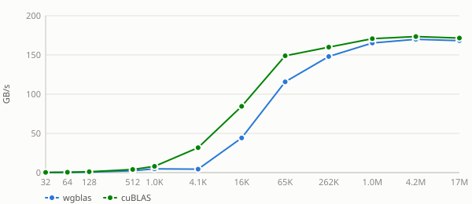
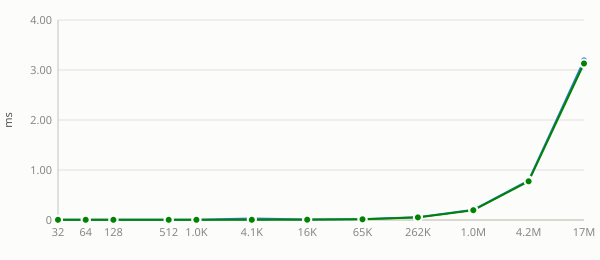
See also
Transpose sweep
Unless noted otherwise, every result above uses
transA = transB = "no-transpose". Both shaders load A/B into shared memory with a transpose-dependent index that scatters what would otherwise be a coalesced load — but it's asymmetric:transBdominates (measured +22-57% at n=1024) whiletransAis small and can even be faster than no-transpose, because B's tile dimension spans a full warp in the coalesced case (so transpose scatters every warp) while A's never gets a full-warp-coalesced load to begin with. All 4(transA, transB)combinations are swept — collapsed below by default, expand atransAvalue, then atransB, to see its table and chart (4 combinations total).Nvidia Geforce Gtx 1650 — transA = no-transpose (2 transB values)
transB = no-transpose
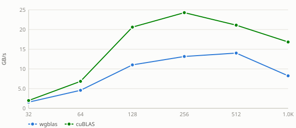
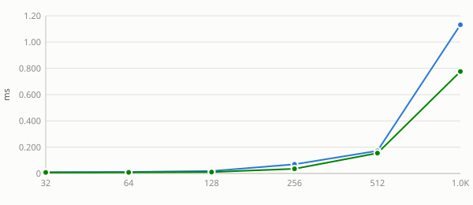
transB = transpose
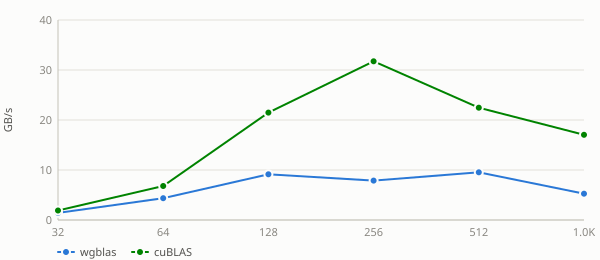
Nvidia Geforce Gtx 1650 — transA = transpose (2 transB values)
transB = no-transpose
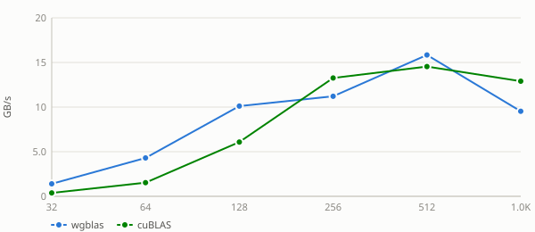
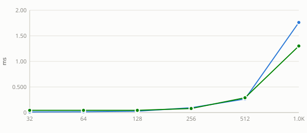
transB = transpose
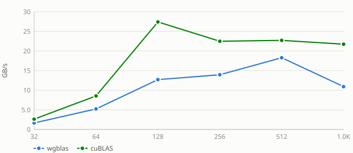
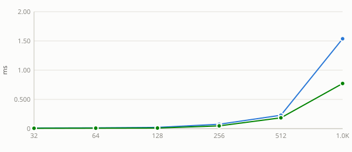
See also:
Ldb sweep
Unless noted otherwise, every result above uses a tight
lda/ldb/ldc(no padding).ldaandldcwere scoped and found to be non-effects; paddingldbonly matters fortransB = "transpose"here (swept at bothtransBvalues below so that's visible in the data). Collapsed below by default — expand atransBvalue, then apad, to see its table and chart.Nvidia Geforce Gtx 1650 — transB = no-transpose (6 pads)
pad = 0
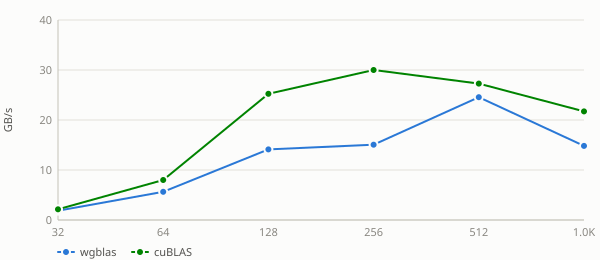
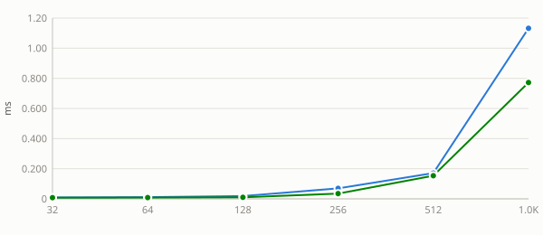
pad = 1
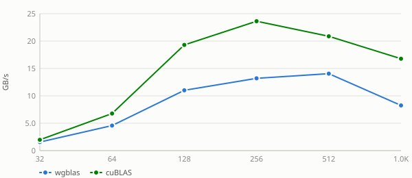
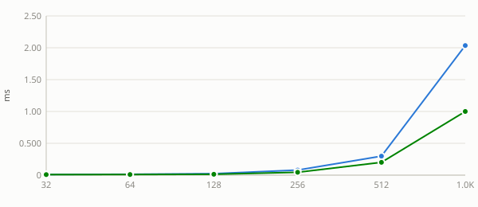
pad = 8
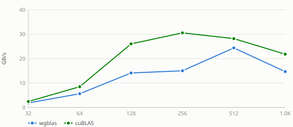
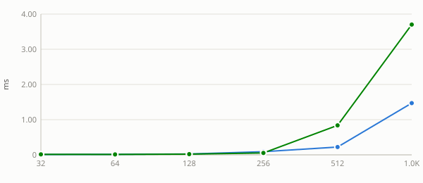
pad = 16
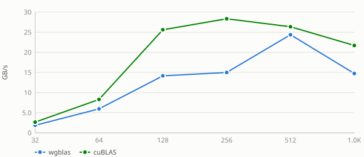
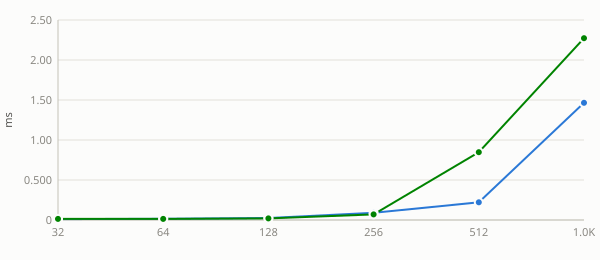
pad = 32
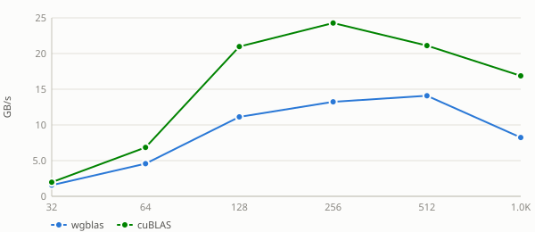
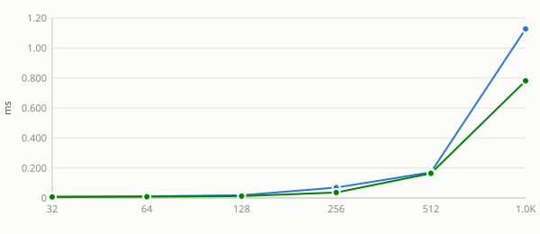
pad = 64
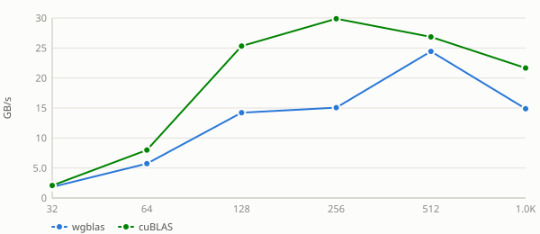
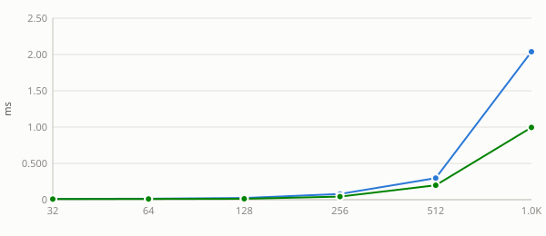
Nvidia Geforce Gtx 1650 — transB = transpose (6 pads)
pad = 0
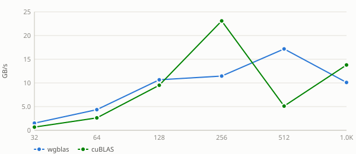
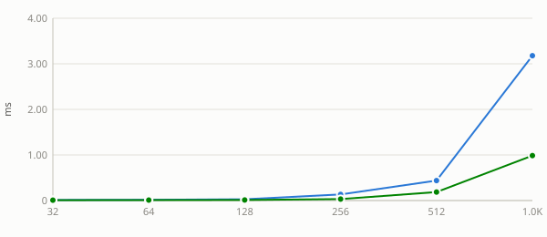
pad = 1
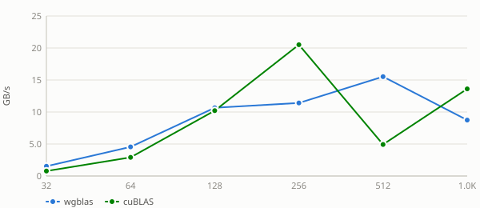
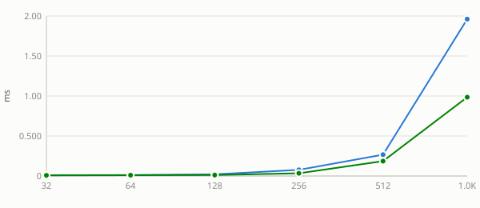
pad = 8
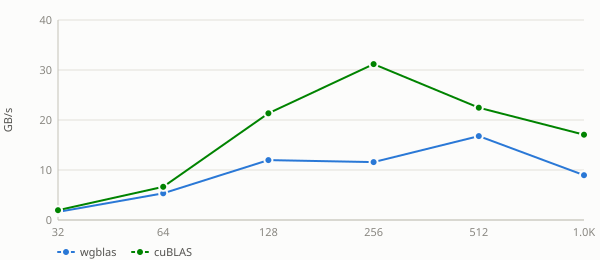
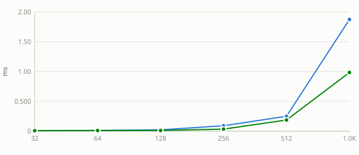
pad = 16
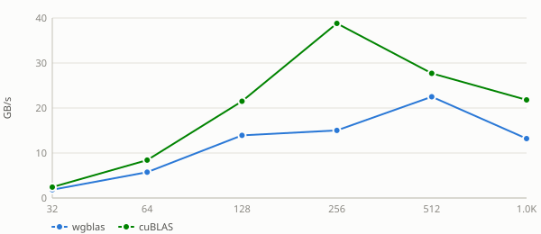
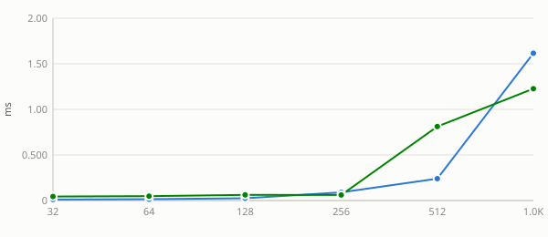
pad = 32
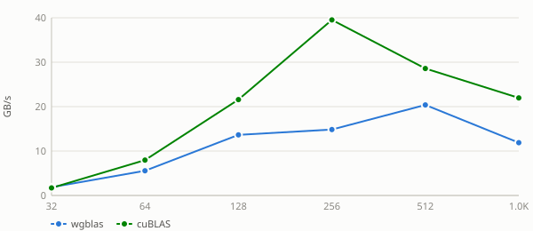
pad = 64
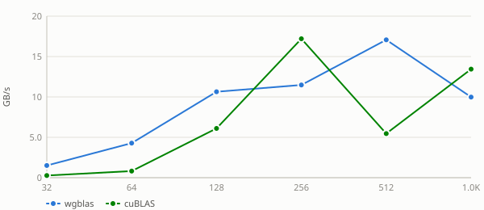
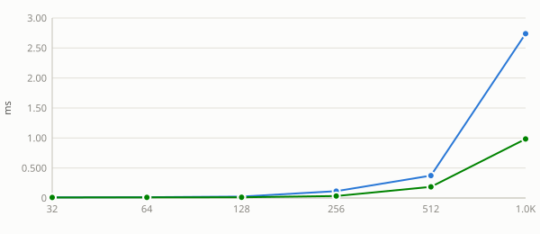
See also: